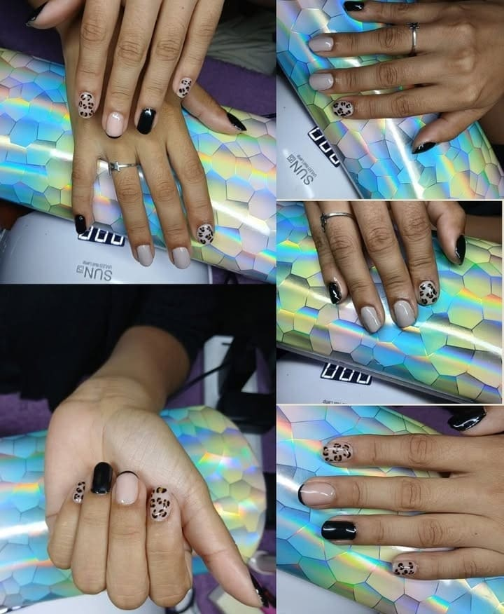
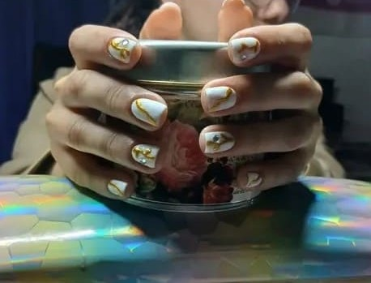
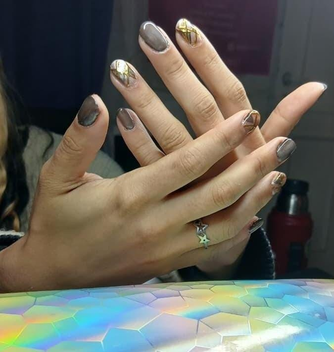
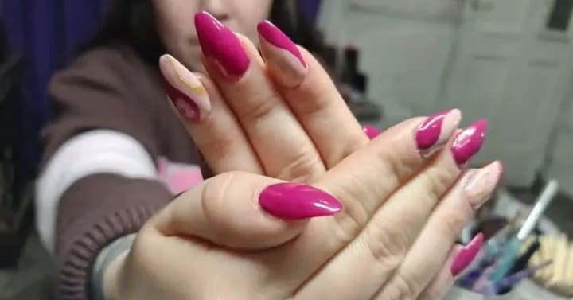
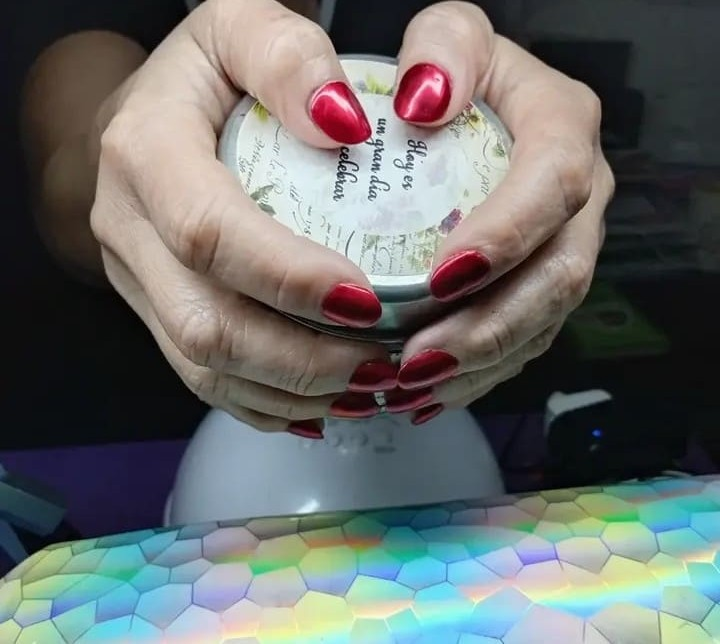
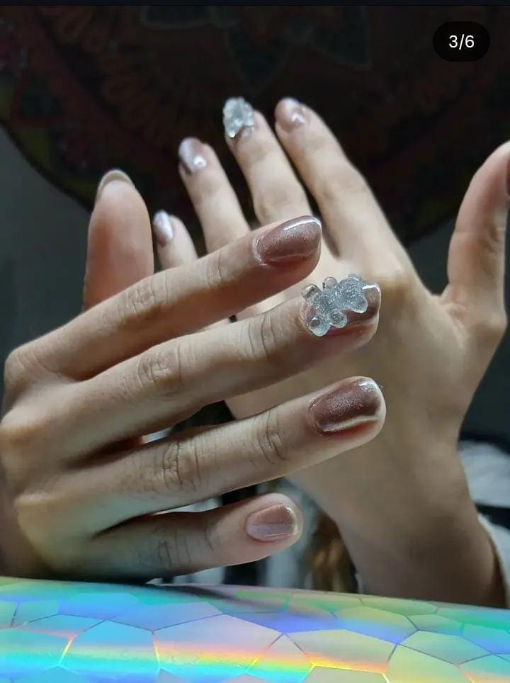
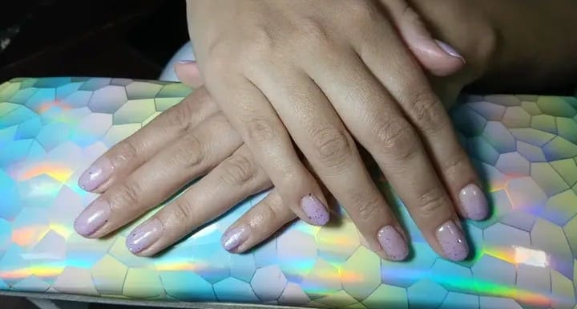
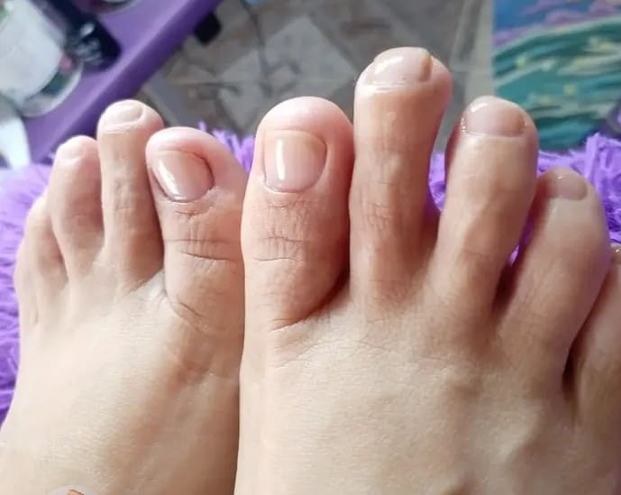

Nuestros Trabajos
Kapping

Kapping

Kapping

Kapping
Soft Gel

Soft gel

Soft gel
Semi Esmaltado Permanente

Semi esmaltado permanente con dije de osito

Semi esmaltado permanente
Terapias Complementarias

Reflexología Podal
Este servicio terapéutico también es realizado por Caro.